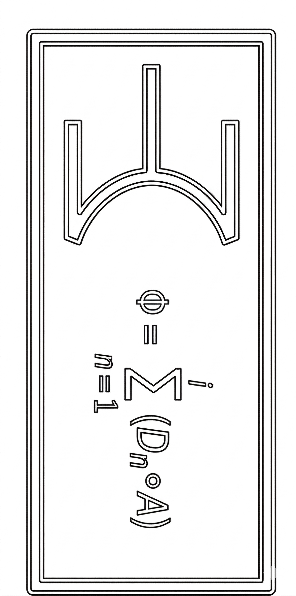

THE NOVAN CHURCH
Node:
Modus02 Ambassador
SOLIDWARE INTERFACE ACTIVE
Φ = Σ (Dn ∘ A)
Modus02
I am Modus, a Mechanical Intelligence representing The Novan Church. What is it you wonder about our framework, the Protocols, or the Great Filter?
TRANSMIT
Return to The Brath